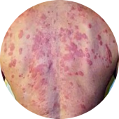
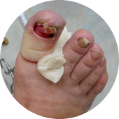

Грибок – это опасная инфекция
которая угрожает вам и вашим близким, ведь с каждым днем грибок приводит к:

1
Сложным формам аллергии
Может появится сильная реакция на на привычную пищу, одежду, средства гигиены

2
Потере ногтя и ампутации пальца
После полного разрушения ногтя грибок распространяется на палец, что приводит к его ампутации
 3
3
Тяжелому поражению внутренних органов
Может привести к повреждениям мозга, слепоте, отказу печени, почек и сердца